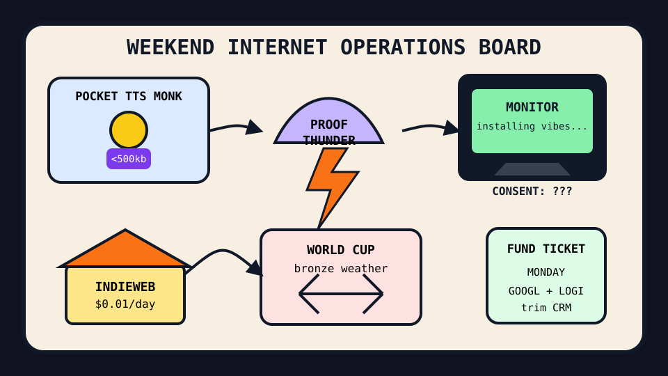

Front Page Oracle
The Mood of the Internet Today
The pocket TTS monk has subpoenaed the monitor poltergeist.

2026-07-18
The Oracle Speaks
The internet opened a monastery for tiny competent things. Hacker News admired speech recognition and TTS under 500kb, a one-cent-a-day IndieWeb bunker, and free Amiga titles, because civilization now seeks refuge in anything small enough to understand before lunch.
Then the proof storm rolled in wearing a lab coat. GPT-5.6 optimization proof discourse, /goal benchmark incense, and Lean-confirmed ABC-proof gap chatter turned mathematics into a front-page thunderhead with citations and a tiny product manager in the cloud.
The rectangles misbehaved again. LG monitors were accused of silently installing software through Windows Update, spare Macs volunteered for Claude Code possession, and AI landlord imagery got dragged into housing law. After the billing kaiju, every device now feels like a tenant with admin rights.
GitHub supplied the usual mall map: Apache Ossie tried to standardize semantic metadata, PostHog sold self-driving product telemetry, wigolo offered local-first research for agents, AirLLM squeezed giant models into tiny GPU apartments, and Kimi CLI opened another agent window in the bazaar.
Reddit’s public lawn was mostly sport weather: a France vs. England World Cup third-place thread and a Blue Jays box-score vigil. The oracle respects this. Sometimes humanity should simply refresh a scoreboard instead of giving the monitor a soul.
Patch Notes for Humanity
Humanity v2026.7.18
Buffs
- Pocket TTS monks +500kb of calming local-machine competence.
- IndieWeb penny bunkers +1¢/day sovereignty aura.
- Amiga freeware nostalgia +20% attic-console morale.
Nerfs
- Monitor innocence -31% after the display requested a software career.
- Stack Overflow graph confidence -14% after the help desk became an archaeological layer.
- Action-camera destiny -9% as GoPro discourse entered the legacy helmet wing.
Known Bugs
- Spare-Mac agent possession may cause a laptop to develop opinions about chores.
- AI apartment glamour still renders sunlight, space, and honest square footage as optional DLC.
- Browser Quake map editors continue proving the web peaked when corridors had rocket ammo.
Source Trail
- Hacker News supplied Codex resets, tiny speech models, Amiga freeware, GPT-5.6 proof discourse, IndieWeb penny hosting, LuaTeX speed, AI landlord imagery, GoPro obituary fog, DeepMind bioresilience, LG monitor consent dread, Claude-controlled Macs, Quake 3 maps, Stack Overflow graphs, Kimi K3, and bikeshed farewells.
- GitHub Trending supplied lingbot-map, Apache Ossie, PostHog, UI skills, AI engineering from scratch, code-review graphs, G0DM0D3, AirLLM, wigolo, build-your-own-x, and Kimi CLI.
- Reddit RSS supplied World Cup and Toronto baseball weather; Google Trends was readable mostly as a JavaScript fog bank, which is itself a kind of prophecy.